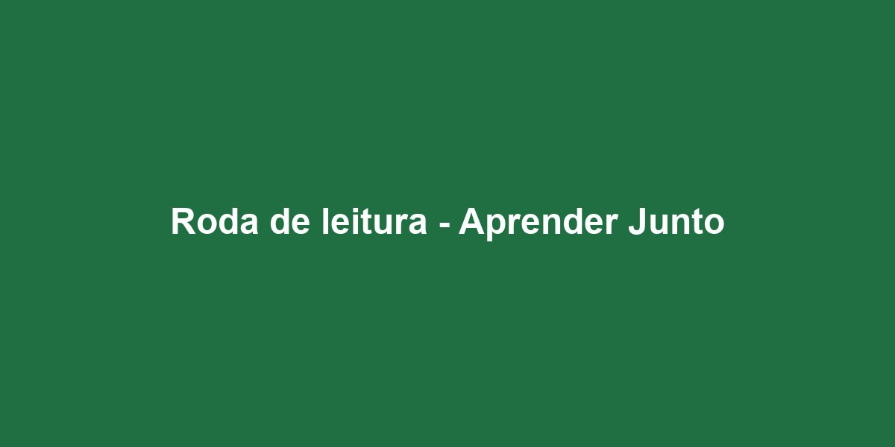

Doe tempo
Reforço escolar, oficinas e apoio na cozinha. Duas horas por semana já fazem diferença.
Cadastre-se como voluntárioDesde 2014 cuidamos de crianças e famílias da zona norte de Piracicaba com reforço escolar, alimentação e formação profissional. Tudo feito por gente do bairro, para o bairro.
Quero ser voluntário Conhecer os projetos

O Instituto Raízes do Bairro é uma organização da sociedade civil sem fins lucrativos, fundada por moradores do Jardim Oriente em 2014. Nascemos de uma horta comunitária e hoje mantemos três projetos permanentes que atendem cerca de 320 crianças e 140 famílias por ano.
Garantir que nenhuma criança do bairro precise escolher entre estudar e comer.
Reforço escolar, oficinas e apoio na cozinha. Duas horas por semana já fazem diferença.
Cadastre-se como voluntárioR$ 60 por mês garantem a alimentação de uma criança durante o mês inteiro.
Cadastre-se como doadorRecebemos alimentos não perecíveis na sede, de segunda a sexta, das 8h às 17h.
Ver endereçoInstituto Raízes do Bairro
Rua das Paineiras, 480 - Jardim Oriente
Piracicaba - SP, CEP 13420-000
Telefone: (19) 3421-0000
WhatsApp: (19) 99000-0000
E-mail: contato@raizesdobairro.org.br
Atendimento de segunda a sexta, das 8h às 17h.